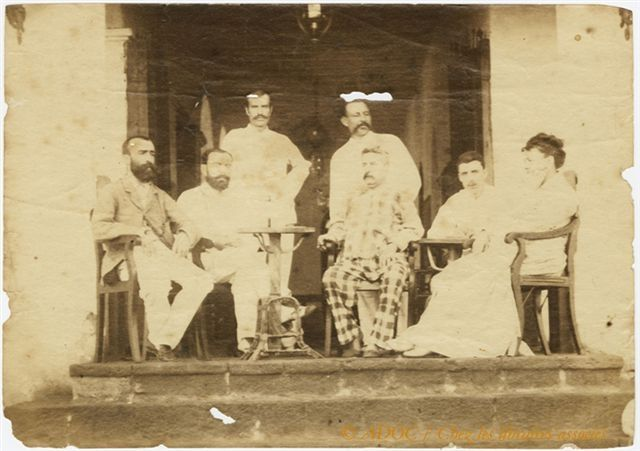

Artur Rimbaud w Adenie
Prawdziwa gratka dla wielbicieli francuskiego poety. Odnaleziono nieznaną dotychczas fotografię, przedstawiającą Artura Rimbauda w wieku dojrzałym. Wykonano ją około roku 1880 na schodach Hôtel de l’Univers w Adenie w Abisynii.
Artykuł tematyczny oraz powiększenia odnalezionej fotografii zamieszczono na stronach paryskiego dziennika Liberation.